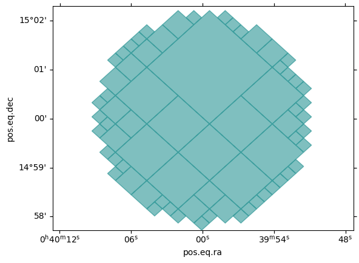
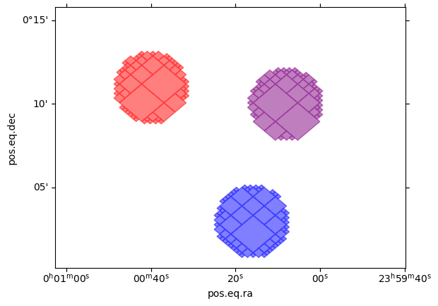
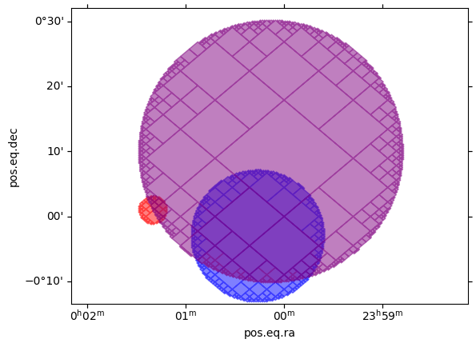
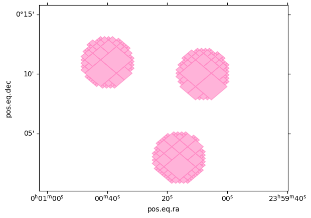
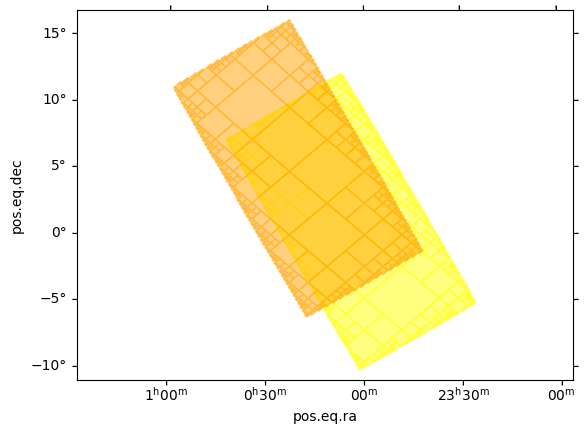
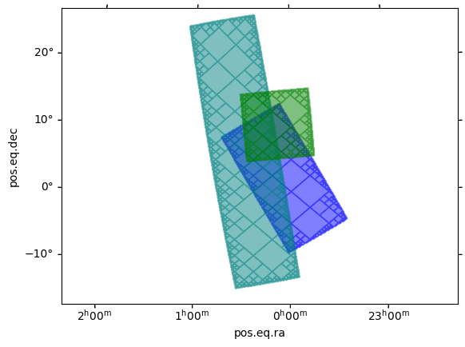
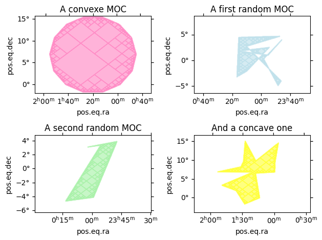
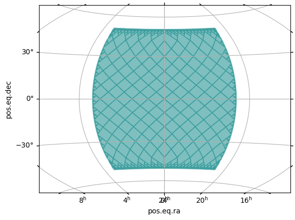

Creating Space-MOCs from shapes¶
[1]:
import matplotlib.pyplot as plt
import numpy as np
from astropy import units as u
from astropy.coordinates import SkyCoord
from mocpy import MOC
Create a MOC from cone(s)¶
Single cone
[2]:
cone = MOC.from_cone(10 * u.deg, 15 * u.deg, radius=2 * u.arcmin, max_depth=14)
fig = plt.figure()
wcs = cone.wcs(fig) # automatically creates a wcs for the MOC
ax = fig.add_subplot(projection=wcs)
cone.fill(ax, wcs, color="teal", alpha=0.5)

Multiple cones, same radius
[3]:
cones = MOC.from_cones(
[10, 4, 2] * u.arcmin,
[11, 3, 10] * u.arcmin,
radius=2 * u.arcmin,
max_depth=14,
)
fig = plt.figure()
wcs = sum(cones).wcs(fig) # automatically creates a wcs for the union of the MOC
ax = fig.add_subplot(projection=wcs)
for cone, color in zip(cones, ["red", "blue", "purple"]):
cone.fill(ax, wcs, color=color, alpha=0.5)

Multiple cones, different radii
[4]:
cones = MOC.from_cones(
[10, 4, 2] * u.arcmin,
[11, 3, 10] * u.arcmin,
radius=[2, 10, 20] * u.arcmin,
max_depth=14,
)
fig = plt.figure()
wcs = sum(cones).wcs(fig) # automatically creates a wcs for the union of the MOC
ax = fig.add_subplot(projection=wcs)
for cone, color in zip(cones, ["red", "blue", "purple"]):
cone.fill(ax, wcs, color=color, alpha=0.5)

Create MOCs from box(es)¶
A single box
[5]:
moc = MOC.from_box(
lon=0 * u.deg,
lat=0 * u.deg,
a=5 * u.deg,
b=2 * u.deg,
angle=45 * u.deg,
max_depth=10,
)
fig = plt.figure()
wcs = moc.wcs(fig) # automatically creates a wcs for the MOC
ax = fig.add_subplot(projection=wcs)
moc.fill(ax, wcs, color="teal", alpha=0.5)

A set of identical boxes (this is more efficient than calling from_box a lot of times. This method is multi-threaded)
[6]:
boxes = MOC.from_boxes(
lon=[1, 5] * u.deg,
lat=[1, 5] * u.deg,
a=10 * u.deg,
b=5 * u.deg,
angle=30 * u.deg,
max_depth=10,
)
fig = plt.figure()
wcs = sum(boxes).wcs(fig) # automatically creates a wcs for the union of the MOC
ax = fig.add_subplot(projection=wcs)
for box, color in zip(boxes, ["yellow", "orange"]):
box.fill(ax, wcs, color=color, alpha=0.5)
same [1, 2]

[7]:
boxes = MOC.from_boxes(
lon=[1, 7, 2] * u.deg,
lat=[2, 6, 10] * u.deg,
a=[10, 20, 5] * u.deg,
b=[5, 5, 5] * u.deg,
angle=[30, 10, 5] * u.deg,
max_depth=10,
)
fig = plt.figure()
wcs = sum(boxes).wcs(fig) # automatically creates a wcs for the union of the MOC
ax = fig.add_subplot(projection=wcs)
for box, color in zip(boxes, ["blue", "teal", "green"]):
box.fill(ax, wcs, color=color, alpha=0.5)
different [7, 8, 6]

Create MOCs from polygon(s)¶
[8]:
# Methods for defining random polygons
def generate_rand_polygon(num_points):
"""Generate a random polygon.
Parameters
----------
num_points : int
number of random points to generate
Returns
-------
(astropy.units.quantity.Quantity, astropy.units.quantity.Quantity)
a tuple containing the longitutes and lattitudes of the random points
"""
lon_min, lon_max = (-5, 5)
lat_min, lat_max = (-5, 5)
lon = (np.random.random(num_points) * (lon_max - lon_min) + lon_min) * u.deg
lat = (np.random.random(num_points) * (lat_max - lat_min) + lat_min) * u.deg
return lon, lat
def generate_concave_polygon(num_points, lon_offset, lat_offset):
"""Generate a concave polygon.
Parameters
----------
num_points : int
the number of corners
lon_offset : float
offset in longitudinal direction
lat_offset : float
offset in latitudinal direction
Returns
-------
(astropy.units.quantity.Quantity, astropy.units.quantity.Quantity)
a tuple containing the longitutes and lattitudes of the random points
"""
radius_max = 10
angles = np.linspace(0, 2 * np.pi, num_points)
radius = np.random.random(angles.shape[0]) * radius_max
lon = (np.cos(angles) * radius + lon_offset) * u.deg
lat = (np.sin(angles) * radius + lat_offset) * u.deg
return lon, lat
def generate_convexe_polygon(num_points, lon_offset, lat_offset):
"""Generate the corners on a convexe polygon.
Parameters
----------
num_points : int
the number of corners
lon_offset : float
offset in longitudinal direction
lat_offset : float
offset in latitudinal direction
Returns
-------
(astropy.units.quantity.Quantity, astropy.units.quantity.Quantity)
a tuple containing the longitutes and lattitudes of the random points
"""
radius_max = 10
angles = np.linspace(0, 2 * np.pi, num_points)
radius = np.random.random() * radius_max * np.ones(angles.shape[0])
lon = (np.cos(angles) * radius + lon_offset) * u.deg
lat = (np.sin(angles) * radius + lat_offset) * u.deg
return lon, lat
[9]:
%%time
# Let's generate four MOCs
## Two random ones
lon, lat = generate_rand_polygon(12)
random_moc_1 = MOC.from_polygon(lon=lon, lat=lat, max_depth=12)
lon, lat = generate_rand_polygon(5)
random_moc_2 = MOC.from_polygon(lon=lon, lat=lat, max_depth=12)
## A convexe one
lon, lat = generate_convexe_polygon(15, 20, 7)
convexe_moc = MOC.from_polygon(lon=lon, lat=lat, max_depth=12)
## A concave one
lon, lat = generate_concave_polygon(15, 20, 7)
concave_moc = MOC.from_polygon(lon=lon, lat=lat, max_depth=12)
CPU times: user 29.3 ms, sys: 191 µs, total: 29.5 ms
Wall time: 29.3 ms
[10]:
# Let's plot the results
fig = plt.figure()
wcs = convexe_moc.wcs(fig) # automatically creates a wcs for the MOC
ax1 = fig.add_subplot(221, projection=wcs) # The first of a 2*2 grig of subplots
convexe_moc.fill(
ax1,
wcs,
color="hotpink",
alpha=0.5,
) # Where the MOC is added to the plot
ax1.set_title("A convexe MOC") # Comments and titles
wcs = random_moc_1.wcs(fig)
ax2 = fig.add_subplot(222, projection=wcs)
random_moc_1.fill(ax2, wcs, color="lightblue", alpha=0.5)
ax2.set_title("A first random MOC")
wcs = random_moc_2.wcs(fig)
ax3 = fig.add_subplot(223, projection=wcs)
random_moc_2.fill(ax3, wcs, color="lightgreen", alpha=0.5)
ax3.set_title("A second random MOC")
wcs = concave_moc.wcs(fig)
ax4 = fig.add_subplot(224, projection=wcs)
concave_moc.fill(ax4, wcs, color="yellow", alpha=0.5)
ax4.set_title("And a concave one")
fig.tight_layout() # prevents overlapping labels

To generate a lot of MOCs from a list of polygons, use the from_polygons method.
[11]:
list_vertices = [
SkyCoord([-4, 4, 4, -4], [4, 4, -4, -4], unit="deg"),
SkyCoord([0, 6, 0, -6], [6, 0, -6, 0], unit="deg"),
]
list_mocs = MOC.from_polygons(list_vertices)
[12]:
# Let's plot them
fig = plt.figure()
wcs = sum(list_mocs).wcs(fig) # gets the WCS for the union of the mocs
ax = fig.add_subplot(projection=wcs)
for moc in list_mocs:
moc.fill(ax, wcs, alpha=0.5)
